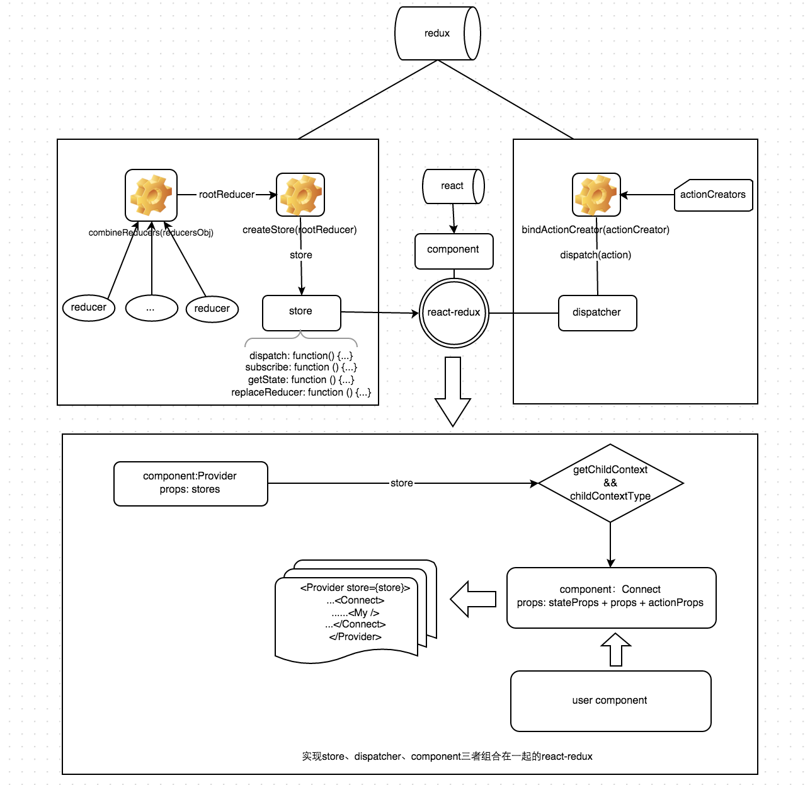

组件初始化时5个钩子函数
组件更新时的5个钩子函数
卸载钩子函数
react推崇的是单向数据流，自上而下进行数据的传递，但是由下而上或者不在一条数据流上的组件之间的通信就会变的复杂。 解决通信问题的方法很多，如果只是父子级关系，父级可以将一个回调函数当作属性传递给子级，子级可以直接调用函数从而和父级通信。 组件层级嵌套到比较深，可以使用上下文getChildContext来传递信息，这样在不需要将函数一层层往下传，任何一层的子级都可以通过this.context直接访问。 兄弟关系的组件之间无法直接通信，它们只能利用同一层的上级作为中转站。而如果兄弟组件都是最高层的组件，为了能够让它们进行通信，必须在它们外层再套一层组件，这个外层的组件起着保存数据，传递信息的作用，这其实就是redux所做的事情。 其实react本身很简单，难的在于如何优雅高效的实现组件之间数据的交流。
首先，redux并不是必须的，它的作用相当于在顶层组件之上又加了一个组件，作用是进行逻辑运算、储存数据和实现组件尤其是顶层组件的通信。 如果组件之间的交流不多，逻辑不复杂，只是单纯的进行视图的渲染，这时候用回调，context就行，没必要用redux，用了反而影响开发速度。
react与redux配合流程：react-redux提供了connect和provide两个好基友，它们一个将组件与redux关联起来，一个将store传给组件。 组件通过dispatch发出action，store根据action的type属性调用对应的reducer并传入state和这个action，reducer对state进行处理并返回一个新的state放入store，connect监听到store发生变化，调用setState更新组件，此时组件的props也就跟着变化。
工作流如图：

值得注意的是connect，Provider，mapStateToProps,mapDispatchToProps是react-redux提供的，redux本身和react没有半毛钱关系，它只是数据处理中心，没有和react产生任何耦合，是react-redux让它们联系在一起。
redux以及react-redux具体实现过程：
参考链接React 详细教程